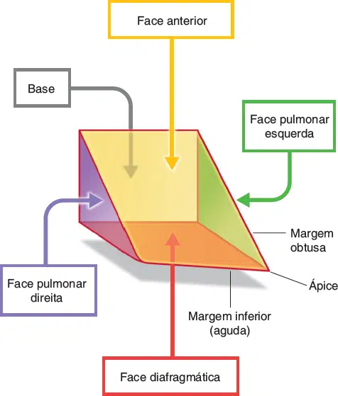
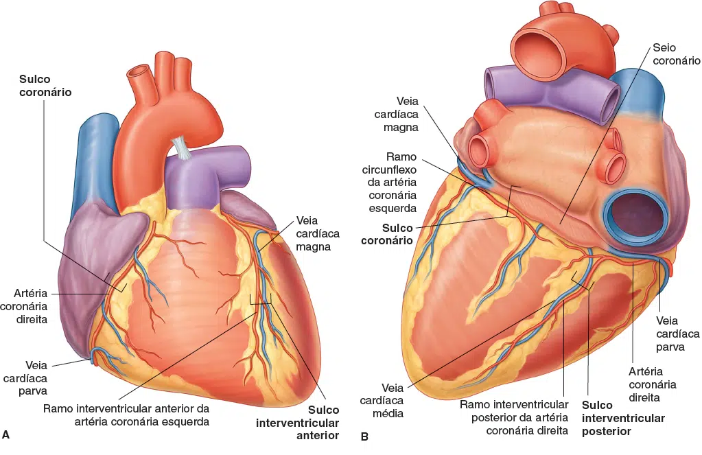
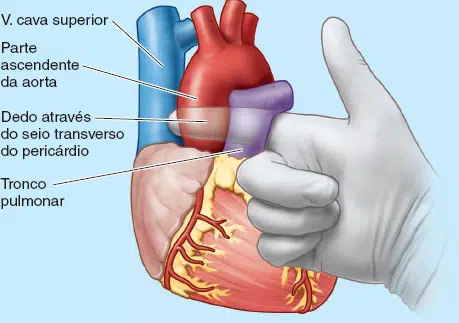
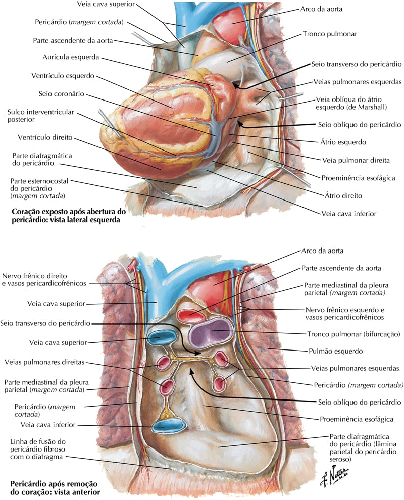

Em sua orientação anatômica típica, o coração possui 5 faces(superfícies), formadas por diferentes divisões internas do coração:
Face esternocostal (anterior) – ventrículo direito.
Face basal (ou posterior) – átrio esquerdo.
Face diafragmática (inferior) – ventrículos esquerdo e direito.
Face pulmonar direita – átrio direito.
Face pulmonar esquerda – ventrículo esquerdo.

GRAY’S: Drake, Richard L.; VOGL, A. Wayne; MITCHEL, Adam W. M.: Gray’s anatomia clínica para estudantes. 4 ed. Rio de Janeiro: Elsevier, 2021.
Margens
O coração parece trapezoide nas vistas anterior e posterior.
As quatro margens do coração são:
Margem direita – átrio direito;
Margem inferior – ventrículo esquerdo e ventrículo direito;
Margem esquerda – ventrículo esquerdo (e parte do átrio esquerdo);
Margem superior – átrio direito e esquerdo e grandes vasos.
MOORE: Keith L. Anatomia orientada para a clínica. 9 ed. Rio de Janeiro: Guanabara Koogan, 2024.
Sulcos externos do coração
O coração é uma estrutura oca, e em seu interior, é dividido em quatro câmaras.
Essas divisões criam depressões na superfície externa do coração conhecidas como sulcos.
O sulco coronário (ou sulco atrioventricular) corre transversalmente ao redor do coração.
Representa a parede que divide os átrios dos ventrículos.
Contém a artéria coronária direita, a veia cardíaca parva, o seio coronário e o ramo cincunflexo da artéria coronária esquerda.
Os sulcos interventriculares anteriores e posteriores podem ser encontrados correndo verticalmente em seus respectivos lados do coração.
Eles representam a parede que separa os ventrículos.
O sulco interventricular anterior está na superfície anterior do coração e contém a artéria interventricular anterior e a veia cardíaca magna.
E o sulco interventricular posterior está na face diafragmática do coração e contém a artéria interventricular posterior e a veia interventricular posterior (cardíaca média).

GRAY’S: Drake, Richard L.; VOGL, A. Wayne; MITCHEL, Adam W. M.: Gray’s anatomia clínica para estudantes. 4 ed. Rio de Janeiro: Elsevier, 2021.
Seios pericárdicos
Os seios pericárdicos não são os mesmos que os “seios anatômicos” (como os seios paranasais).
São passagens formadas pela maneira única em que o pericárdio se dobra em torno dos grandes vasos.
O seio pericárdico oblíquo é uma passagem final cega (beco sem saída) localizada na face posterior do coração.
O seio pericárdico transverso é encontrado superiormente no coração.
Pode ser usado em cirurgia de revascularização miocárdica.

MOORE: Keith L. Anatomia orientada para a clínica. 9 ed. Rio de Janeiro: Guanabara Koogan, 2024.

NETTER: Frank H. Netter Atlas De Anatomia Humana. 7 ed. Rio de Janeiro: Elsevier, 2021.